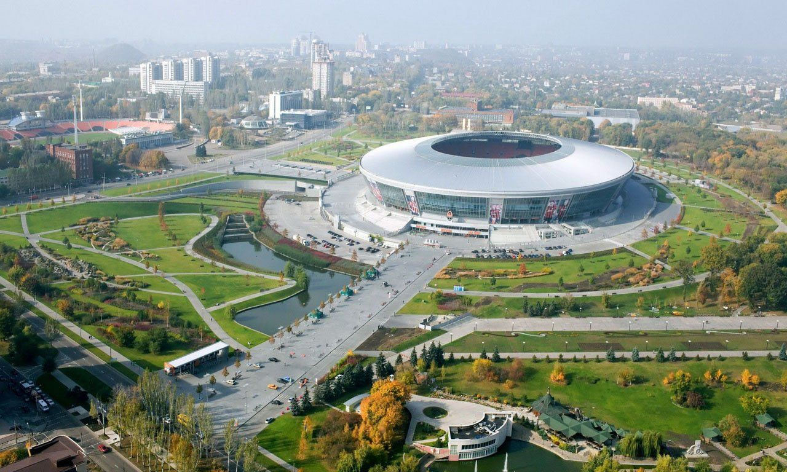
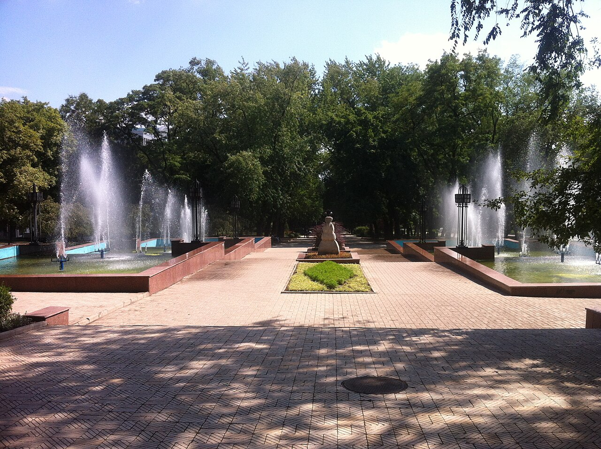
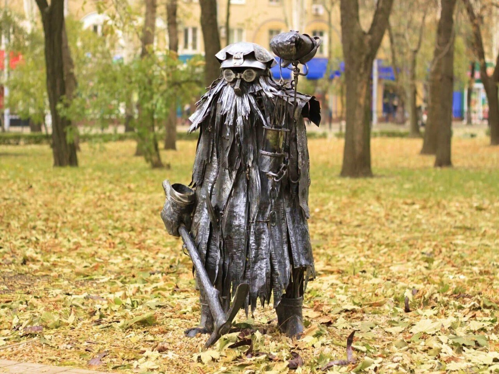
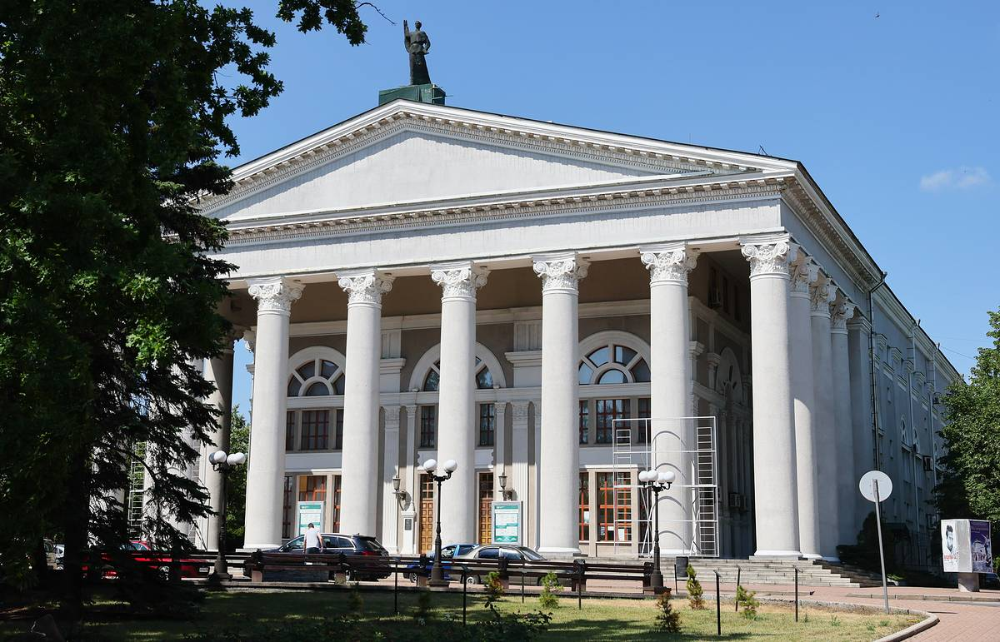
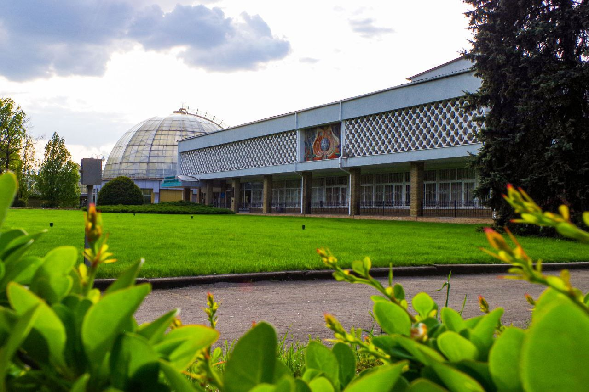
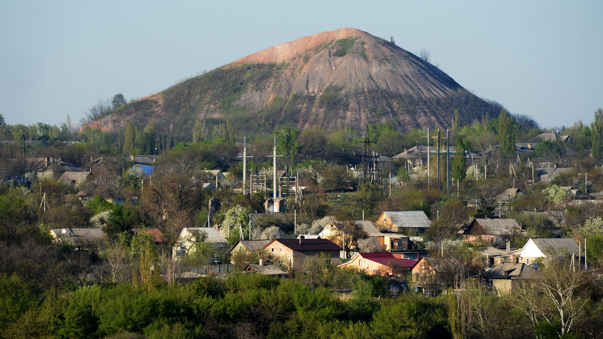

Промышленный и культурный центр Донбасса с богатой историей и уникальным наследием
О городе
Донецк — крупный промышленный город, основанный в как Юзовка. Город расположен в юго-восточной части Украины и является административным центром Донецкой области. Донецк известен своей угольной промышленностью, металлургией и как город, где зародился знаменитый футбольный клуб «Шахтёр».
Подробнее о географическом положении
Донецк расположен в степной зоне на реке Кальмиус. Город находится в 80 км от Азовского моря и занимает площадь около 385 квадратных километров. Климат умеренно-континентальный с мягкой зимой и жарким летом.
Фотогалерея города

Стадион Донбасс Арена

Центральный бульвар Пушкина

Уникальный парк кованых скульптур

Главный театр города

Донецкий ботанический сад

Символ Донбасса — терриконы
История города Донецк
История Донецка насчитывает более полутора веков. Город прошёл путь от небольшого промышленного поселения до крупного индустриального центра.
Ключевые события в истории города
Дата
Событие
Значение
Основание Юзовки
Джон Юз основал металлургический завод, положив начало городу
Переименование в Сталино
Город получил новое название в честь И.В. Сталина
Голодомор
Трагические события, повлиявшие на развитие региона
Немецкая оккупация
Город был оккупирован немецкими войсками, серьёзные разрушения
Переименование в Донецк
Город получил современное название по реке Северский Донец
Миллионный житель
Донецк достиг численности населения в 1 миллион человек
Основание ФК "Шахтёр"
Создание футбольного клуба, ставшего символом города
Открытие Донбасс Арены
Построен современный футбольный стадион европейского уровня
Чемпионат Европы по футболу
Донецк принимал матчи Евро-2012
Начало конфликта
События, кардинально изменившие жизнь города
Культурное возрождение
Открытие новых культурных центров и восстановление наследия
Инфраструктура Донецка
Географическое положение
Координаты: 48°00′ с.ш., 37°48′ в.д.
Высота: 169 м над уровнем моря
Площадь: 385 км²
Часовой пояс: UTC+2 (EET)
Население
Численность: ~900 тысяч человек
Плотность: 2 337 чел/км²
Агломерация: более 2 млн человек
90%
Уровень урбанизации
Административное деление
Ворошиловский район - центральная часть
Киевский район - северная часть
Кировский район - восточная часть
Ленинский район - западная часть
Петровский район - южная часть
Общественный транспорт
Автобусы:
Более 50 маршрутов, охватывающих всю городскую территорию
Троллейбусы:
15 троллейбусных маршрутов с электрическим питанием
Трамваи:
Трамвайная сеть с 6 основными маршрутами
Маршрутки:
Дополнительная сеть микроавтобусных маршрутов
Культура и искусство Донецка
Донецк является важным культурным центром региона с богатыми традициями в области театра, музыки, изобразительного искусства и литературы.
Донецкий академический театр оперы и балета
Основан в . Один из ведущих театров Украины, известный своими постановками классических и современных произведений.
Донецкий художественный музей
Крупнейшая художественная коллекция региона, включающая произведения от древнерусского искусства до современности.
Донецкая филармония
Центр музыкальной культуры города, где выступают симфонический оркестр и камерные ансамбли мирового уровня.
Парк кованых фигур
Уникальный музей под открытым небом, демонстрирующий мастерство местных кузнецов и художников.
Известные деятели культуры Донецка
Сергей Прокофьев - великий композитор, родился в Сонцовке под Донецком
Архип Куинджи - знаменитый художник-пейзажист
Василий Стус - поэт и переводчик
Иван Козловский - оперный певец
Леонид Быков - актёр и режиссёр
Фестиваль "Донбасс-жемчужина" проходит ежегодно и собирает артистов со всего мира
Обратная связь
Свяжитесь с нами для получения дополнительной информации о городе Донецк или оставьте свои предложения.